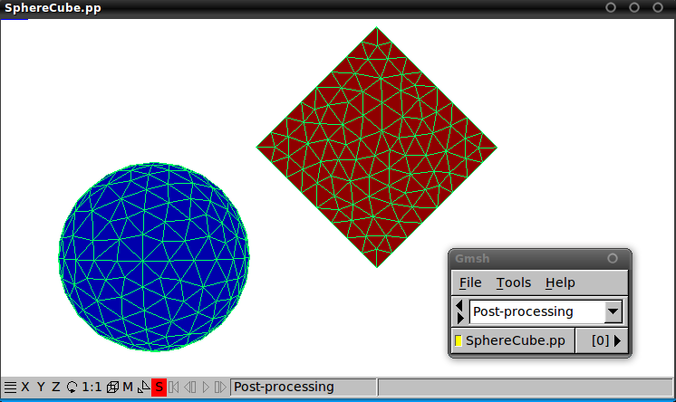
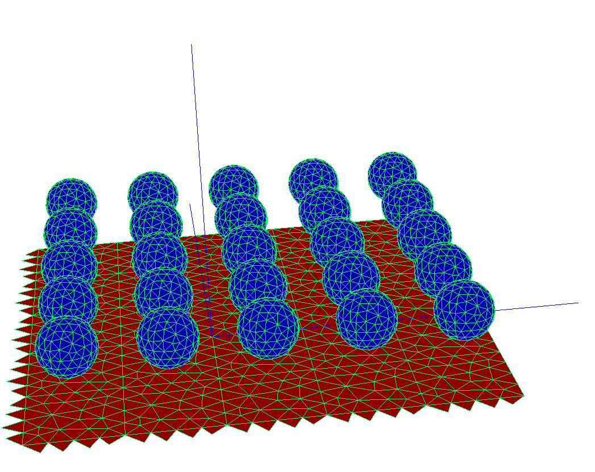
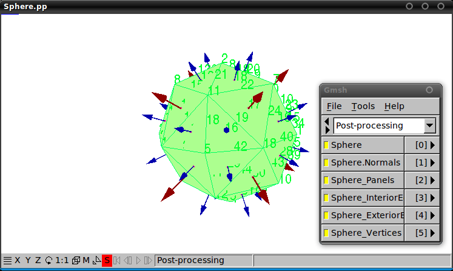
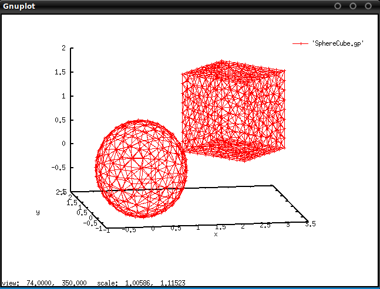
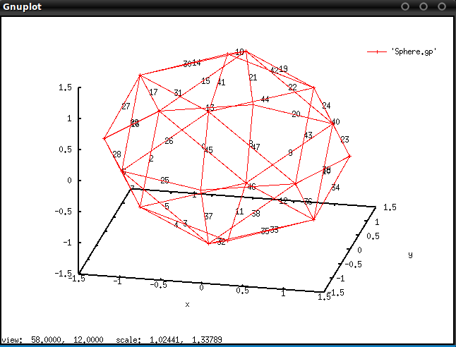

Analyzing objects and geometries with scuff-analyze
The scuff-em suite comes with a simple standalone utility named scuff-analyze that you can use to gather some quick statistics on meshed objects and scattering geometries described by mesh files and geometry files.
There are several situations in which this can be useful:
- You want to know how much memory will be occupied by the BEM matrix
for a geometry described by a
.scuffgeofile. - Your
.scuffgeofile contains multipleOBJECTsorSURFACEs, each described by a separate surface mesh and possibly displaced, rotated, or periodically replicated viaLATTICEstatements, and you want to visualize the full geometry to make sure the file you wrote actually describes what you want. - You have created a
.transfile describing a list of geometrical transformations to be applied to your geometry, and before running a full calculation you want to do a quick sanity check by visualizing the geometry under each of your transformations to make sure they are what you intended. - You want to delve into the innards of libscuff by playing around with the simultaneous linear BEM system it constructs. In this case you will need to know how the RWG basis functions in your surface mesh are ordered within the BEM matrices and vectors, i.e. you need the correspondence between rows of the BEM matrix and interior edges in your surface-mesh geometry.
scuff-analyze Command-Line Options
Options specifying the file to analyze
--geometry MyGeometry.scuffgeo
Analyze a full geometry described by a scuff-em geometry file.
--mesh MyObject.msh
--meshFile MyObject.mesh
Analyze a single object described by a surface mesh. (The two options are synonymous.)
Option specifying a list of geometrical transformations
--TransFile MyTransFile.trans
Specify a list of geometrical transformations to be applied to a geometry. This is useful for (a) checking that your transformation file can be properly parsed by scuff-em, and (b) producing a visualization output file to confirm that the transformations you got are the ones you wanted.
Options controlling the generation of visualization files
--WriteGMSHFiles
Write visualization files suitable for viewing with gmsh.
--WriteGMSHLabels
Append visualization data to gmsh visualization files that
provides information on how the geometry is represented internally
within scuff-em. This option is automatically enabled when the
--mesh option is used.
--Neighbors nn
(For periodically repeated geometries only). If this option is specified,
the gmsh visualization files will include the first nn neighboring
cells in all directions. (For example, --Neighbors 1 will produce a
plot showing the innermost 3x3 grid of unit cells, while --Neighbors 2
will show the innermost 5x5 grid of cells.) This is useful for visualizing
how your unit-cell meshes fit together with their images across unit-cell
boundaries to comprise a periodically replicated lattice.
--EPFile MyEPFile
This option allows you to specify a list of individual points
to be plotted in the visualization file together with the
meshed surfaces in your geometry. This is useful for double-checking
that the points at which you are requesting spatially-resolved
information from a scuff-em code (for example, scattered
and total field components in
scuff-scatter,
or Casimir-Polder potentials in
scuff-caspol
spatially-resolved Poynting flux in
scuff-neq) are
actually the points you wanted. The file MyEPFile
is the same file you specify for the --EPFile option
to any other scuff-em code: it
should contain 3 numbers per line (the cartesian
coordinates of the points).
--WriteGnuplotFiles
Write visualization files suitable for viewing with gnuplot.
scuff-analyze console output
Running scuff-analyze on a geometry file
Running scuff-analyze on a typical scuff-em geometry file yields console output that looks like this:
% scuff-analyze --geometry CylinderRing.scuffgeo
***********************************************
* GEOMETRY CylinderRing.scuffgeo
***********************************************
2 objects
22548 total basis functions
Size of BEM matrix: 3.84 GB
***********************************************
* OBJECT 0: Label = Ring
***********************************************
Meshfile: Ring.msh
7360 panels
11040 total edges
22080 total basis functions
11040 interior edges
3680 total vertices (after eliminating 0 redundant vertices)
3680 interior vertices
0 boundary contours
interior vertices - interior edges + panels = euler characteristic
3680 - 11040 + 7360 = 0
Total area: 6.1547934e+00
Avg area: 8.3624910e-04 // sqrt(Avg Area)=2.8917972e-02
***********************************************
* OBJECT 1: Label = Cylinder
***********************************************
Meshfile: Cylinder.msh
156 panels
234 total edges
468 total basis functions
234 interior edges
80 total vertices (after eliminating 0 redundant vertices)
80 interior vertices
0 boundary contours
interior vertices - interior edges + panels = euler characteristic
80 - 234 + 156 = 2
Total area: 6.6885562e-01
Avg area: 4.2875360e-03 // sqrt(Avg Area)=6.5479279e-02
Thank you for your support.
Running scuff-analyze on a mesh file
You can also run scuff-analyze on a mesh file describing just a single object:
% scuff-analyze --mesh Cylinder.msh
Meshfile: Cylinder.msh
156 panels
234 total edges
234 total basis functions
234 interior edges
80 total vertices (after eliminating 0 redundant vertices)
80 interior vertices
0 boundary contours
interior vertices - interior edges + panels = euler characteristic
80 - 234 + 156 = 2
Total area: 6.6885562e-01
Avg area: 4.2875360e-03 // sqrt(Avg Area)=6.5479279e-02
Thank you for your support.
One use of scuff-analyze is to generate visualization files that
may be opened in gnuplot
or gmsh. In addition to showing you what
your geometry looks like, these files will also indicate the internal
numbering that scuff-em uses for the vertices, panels, and edges
in the surface discretization. This information can be useful, for
example, in interpreting the BEM matrices exported by passing the
--ExportBEMMatrix option to various scuff-em programs.
Viewing gmsh visualization files
The gmsh visualization files generated by scuff-analyze
contain different information depending on whether you use the
--geometry option to specify a full scuff-em geometry
(a .scuffgeo file) or the
--mesh option to specify a single surface mesh for an
individual object (as described by a gmsh .msh file or
other mesh file format).
gmsh Visualization of Full Geometries
If you specify the --geometry option, the resulting .pp file
will contain only a single "view" giving you a graphical
representation of the various objects in the geometry. This is
convenient for confirming that objects are positioned relative
to one another in the way that you intended. For instance,
consider the following geometry file (called SphereCube.scuffgeo),
which describes a geometry involving a sphere and a cube, with the
cube displaced and rotated vis-a-vis the base position and orientation
described by its .msh file:
OBJECT TheSphere
MESHFILE Sphere.msh
MATERIAL Silicon
ENDOBJECT
OBJECT TheCube
MESHFILE Cube.msh
MATERIAL Teflon
ROTATED 45 ABOUT 0 0 1
DISPLACED 0.9 1.1 2.3
ENDOBJECT
To visualize this configuration of objects, from the command line we can say
% scuff-analyze --geometry SphereCube.scuffgeo --WriteGMSHFiles
% gmsh SphereCube.pp
The first command here creates a file called SphereCube.pp (as well
as a bunch of console output, which we omit), while the second line
opens this file in gmsh, yielding this:

gmsh Visualization of Extended Geometries: The --neighbors Option
Here's an example in which we have a periodically extended geometry
and we'd like to visualize how the unit cell described by our
.scuffgeo file fits together with its images across the unit-cell
boundaries. This geometry describes an array of nanospheres atop a
silicon substrate.
The .scuffgeo file:
LATTICE
VECTOR 2.4 0.0 0.0
VECTOR 0.0 2.4 0.0
ENDLATTICE
REGION UpperHalfSpace MATERIAL Vacuum
REGION LowerHalfSpace MATERIAL Silicon
REGION SphereInterior MATERIAL Gold
SURFACE Sphere
MESHFILE Sphere.msh
DISPLACED 1.2 1.2 1.85
REGIONS UpperHalfSpace SphereInterior
ENDSURFACE
SURFACE Substrate
MESHFILE Square.msh
REGIONS UpperHalfSpace LowerHalfSpace
ENDSURFACE
To visualize the unit cell together with a few surrounding lattice
cells, we use the --Neighbors option to scuff-analyze:
% scuff-analyze --geometry SphereSubstrateArray.scuffgeo --WriteGMSHFiles --Neigbors 2
% gmsh SphereSubstrateArray.pp

Notice that the visualization plot here includes extra panels hanging off
two of the four edges of each lattice cell. These are called straddlers;
they are not present in the actual .msh file specified in your .scuffgeo
file, but are automatically added internally by scuff-em for contiguous
surfaces extending beyond the confines of the unit cell.
gmsh Visualization of Individual Meshes
On the other hand, if you specify the --mesh option to scuff-analyze,
then the .pp files generated by the --WriteGMSHFiles option will contain
various additional information. For example, suppose we wanted to get some
more information on the sphere mesh from the previous example:
% scuff-analyze --mesh Sphere.msh --WriteGMSHFiles
% gmsh Sphere.pp
The first command here creates a gmsh post-processing file called
Sphere.pp which contains several "views," each providing a different
set of information on how scuff-em internally processes the surface
mesh. Within the gmsh GUI, you can zoom in and out, rotate and translate
the object, and click the little yellow squares in the menu window to
turn on and off the display of individual views. (For clarity, the
screenshot below was generated using a more coarsely-meshed sphere than
in the screenshot above.)

The first view here (the one named "Sphere") just plots the triangular
panels that define the surface mesh. This is the same information that
you would get from running scuff-analyze with the --geometry option.
The remaining views contain the following additional information. (This information is probably only of interest to people who want to hack about in the internals of libscuff and need to know the details of the internal representation of objects and BEM quantities.)
- The direction of the surface normal to each panel as read in from the
.mshfile. At present this information is not used for anything inside libscuff, because scuff-em makes its own overriding decision about how to orient the surface normal. - The (zero-based) indices of the panels.
- The (zero-based) indices of the internal edges. The internal edge whose index is n corresponds to the nth RWG basis function for this object and hence to the nth surface-current expansion coefficient (for PEC objects) or the 2nth and 2n+1th surface-current expansion coefficients (for non-PEC objects) in the portion of the BEM solution vector corresponding to the object in question.
- The (zero-based) indices of the exterior edges.
- The (zero-based) indices of the vertices.
Viewing gnuplot visualization files
gnuplot Visualization of Full Geometries
Running scuff-analyze with the --WriteGNUPLOTFiles option will
create a file called MyGeometry.gp (where MyGeometry.scuffgeo was
the geometry file specified using the --geometry option) which you
can visualize in gnuplot using the command splot 'MyGeometry.gp' w lp.
% scuff-analyze --geometry SphereCube.scuffgeo --WriteGNUPLOTFiles
% gnuplot
gnuplot> splot 'SphereCube.gp' w lp

gnuplot Visualization of Individual Meshes
Running scuff-analyze with the --WriteGNUPLOTFiles option will
create a file called MyObject.gp (where MyObject.msh was the mesh
file specified using the --mesh option), together with a bunch of
auxiliary files named, for instance, MyObject.gp.edgelabels.
These auxiliary files contain gnuplot commands to superpose
various types of additional information atop the basic plots, and
should be used with the load command, like this:
bash
% scuff-analyze --mesh Sphere.msh --WriteGNUPLOTFiles
% gnuplot
gnuplot> load 'Sphere.gp.edgelabels'
gnuplot> splot 'Sphere.gp' w lpbash
